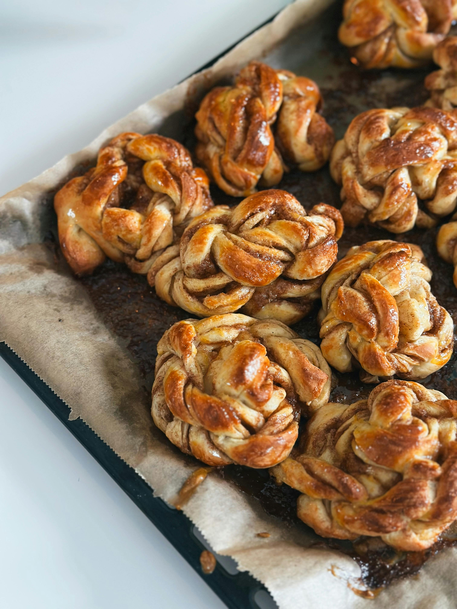

Nordic Sweet Rolls

Known as kanelbullar in Sweden and kanelsnurrer in Norway, these yeasted pastries filled with buttery cinnamon sugar and often topped with a delicate glaze.
These beautifully twisted rolls are a beloved part of Nordic fika culture: a daily ritual of coffee and something sweet.
Ingredients
Dough:
- AP Flour 1 1/2 cups
- 1/2 tsp
- Whole Milk 1 cup + 1 cup
- Eggs 3 each
- Butter (melted) 6 TBSP (3oz)
- Vegetable Oil as needed
Icing:
- Confectioner’s Sugar 2 cups
- Water 2 TBSP
- Vanilla Extract 1/4 tsp
Directions
Dough:
- In a medium mixing bowl, combine the flour and salt, and whisk them to combine.
- Whisk together the 3 eggs and 1 cup of the milk; mix this into the flour until no lumps remain, and the batter is smooth.
- Slowly pour in the remaining cup of milk along with the melted butter, while continually whisking until completely combined (the batter will be extremely liquidy).
Leave the bowl out on the counter for about 30 minutes so that the ingredients can warm up to room temperature. Meanwhile, preheat your oven to 500F.
- Place the mini bundt pan in the oven for a few minutes to heat up, then transfer your batter into a liquid measuring cup for easy pouring.
Have a little vegetable oil, and a pastry brush handy too, as the next step should be performed as quickly as possible.
- Using oven mitts, or kitchen towels, quickly open the oven door and slide out the now hot bundt pan.
Use the pastry brush to coat the insides with a thin layer of oil and then pour the popover batter into each of the outside moulds, all the way to the top.
Carefully slide the pan back into the oven and set a timer for 30 minutes. Resist the urge to open the oven door again before then.
- After 30 minutes, open the door and check the popovers. We’re looking for a nice golden brown and hard, crispy top.
Once achieved, you can reduce the oven temperature to 300F and let them bake for 10 more minutes before pulling them out
(if after the initial 30 minutes the tops are soft and depress easily when touched, close the door and let them bake for an additional 5 to 10 minutes at 500F before dropping the oven temperature to 300F).
- Remove the pan from the oven and ‘pop’ out the pastries immediately, being very careful not to burn your fingers in the process (stuff is hot!).
The oil we brushed on earlier should help the Sweetrolls release easily from the pan.
Flip them upside down and press on them gently to help them sit flat.
Icing:
- Combine all ingredients in a mixing bowl and whisk until smooth.
- Lightly glaze sweet rolls once they have cooled enough. Now no lollygagging; enjoy fresh!
Home